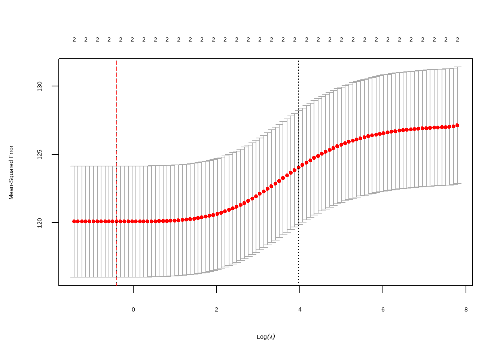

Installing package into 'C:/Users/krist/AppData/Local/R/win-library/4.3'
(as 'lib' is unspecified)
Warning: package 'colorblindr' is not available for this version of R
A version of this package for your version of R might be available elsewhere,
see the ideas at
https://cran.r-project.org/doc/manuals/r-patched/R-admin.html#Installing-packages
Warning: unable to access index for repository http://www.stats.ox.ac.uk/pub/RWin/bin/windows/contrib/4.3:
cannot open URL 'http://www.stats.ox.ac.uk/pub/RWin/bin/windows/contrib/4.3/PACKAGES'
Warning: 'BiocManager' not available. Could not check Bioconductor.
Please use `install.packages('BiocManager')` and then retry.
Warning in p_install(package, character.only = TRUE, ...):
Warning in library(package, lib.loc = lib.loc, character.only = TRUE,
logical.return = TRUE, : there is no package called 'colorblindr'
Warning in pacman::p_load(colorblindr, dlookr, formattable, GGally, ggdist, : Failed to install/load:
colorblindr
narrow down to College of Soc & Behav Sciences
Read in Data
# read in dataregression_data <-read.csv("data/study_data.csv")
# filter to be just desired collegeregression_data <- regression_data %>%filter(College =="College of Social & Behav Sci")# remove character columnsnumeric_regression_data <-select_if(regression_data, is.numeric)numeric_regression_data <- numeric_regression_data %>%select(-c(1:5))numeric_regression_data <- numeric_regression_data %>%select(-c(2:8, 10:14))
# normalized the datanormalized_regression_data <- numeric_regression_data %>%mutate(across(c(Early_Morning:Other), .fns=~./Sections*100))
# create different df to look at different featuresgeneral_regression_data <- numeric_regression_data %>%select(c(1, 3:6))time_regression_data <- normalized_regression_data %>%select(c(Percent.DEW, 7:12))day_regression_data <- normalized_regression_data %>%select(c(Percent.DEW, 13:17))mode_regression_data <- normalized_regression_data %>%select(Percent.DEW, In_Person, Full_Online, Hybrid, Live_Online)session_regression_data <- normalized_regression_data %>%select(Percent.DEW, 33:35)
Feature selection
Correlation Analysis
# Create a table and format itgeneral_regression_data_table <-correlate(general_regression_data) %>%formattable()
# Save the plot as a PNG file with increased x-axis and y-axis text sizepng_file <-"images/session_regression_data_table.png"png(png_file, width =10, height =8, units ="in", res =200)# Increase x-axis and y-axis text size in the saved plotggcorrplot(cor(session_regression_data), lab =TRUE, lab_size =5) +theme(axis.text.x =element_text(size =20), # Adjust size as neededaxis.text.y =element_text(size =20)) # Adjust size as neededdev.off()
png
2
# Display the saved plotplot_correlate(session_regression_data_table)
Warning: 'plot_correlate' is deprecated.
Use 'plot.correlate' instead.
See help("Deprecated")
# create a df with only the desired featuresmodel_data <- normalized_regression_data %>%select(c(DEW_COUNT,Total.Enroll, Percent.DEW, Full_Online, Second_Half_Session, First_Half_Session, Reg_Session))
Multi
# Perform multiple linear regressionmodel <-lm(Percent.DEW ~ Second_Half_Session + Full_Online, data = model_data)# Summary of the regression model# Summary of the regression model in a kable tablesummary_table <-data.frame(Estimate =coef(model),`Std. Error`=summary(model)$coefficients[, "Std. Error"],`t value`=summary(model)$coefficients[, "t value"],`Pr(>|t|)`=summary(model)$coefficients[, "Pr(>|t|)"])# Print the kable tablekable(summary_table, align ="c")
Estimate
Std..Error
t.value
Pr...t..
(Intercept)
11.4786541
0.2765963
41.499665
0
Second_Half_Session
0.0408008
0.0072483
5.629016
0
Full_Online
0.0339054
0.0052942
6.404287
0
set.seed(1)# X will be Second_Half_SessionX <- model_data$Second_Half_Session# y will be the percent dewy <- model_data$Percent.DEWdata <-tibble(X=X, y=y)split_obj <-initial_split(data, prop=.8)train_data <-training(split_obj)test_data <-testing(split_obj)# Extract X_train, X_test, y_train, y_testX_train <- train_data$Xy_train <- train_data$yX_test <- test_data$Xy_test <- test_data$y
# Create a linear regression model specificationlin_reg_spec <-linear_reg() |>set_engine("lm")# Fit the model to the training datalin_reg_fit <- lin_reg_spec |>fit(y ~ X, data = train_data)
# Apply model to the test sety_pred_test <-predict(lin_reg_fit, new_data = test_data) |>pull(.pred)
# Plotting true vs predicted valuesTrue_Predicted_table <-ggplot() +geom_point(aes(x =as.vector(y_test), y = y_pred_test), color ='black') +ggtitle('Comparing true and predicted values for test set') +xlab('True values for y') +ylab('Predicted values for y')ggsave("images/True_Predicted_table.png", plot=True_Predicted_table)
Saving 7 x 5 in image
plot(True_Predicted_table)
# Prepare data for yardstick evaluationeval_data <-tibble(truth =as.vector(y_test),estimate = y_pred_test)# Model evaluationrmse_value <-rmse(data = eval_data, truth = truth, estimate = estimate)r2_value <-rsq(eval_data, truth = truth, estimate = estimate)cat("Root mean squared error =", sprintf("%.4f", rmse_value$.estimate), "\n")
### Step 4: Postprocessing# Plot outputsPredicted_Function <-ggplot() +geom_point(aes(x =as.vector(X_test), y =as.vector(y_test)), color ='black') +geom_line(aes(x =as.vector(X_test), y = y_pred_test), color ='blue', linewidth =1) +ggtitle(sprintf('Predicted Function: y = %.2fX + %.2f', slope, intercept)) +xlab('X') +ylab('y') +theme(axis.text.x =element_text(size =20), # Adjust size as neededaxis.text.y =element_text(size =20), plot.title =element_text(size =25)) # Adjust size as needed# Save the plot as a PNG fileggsave("images/Predicted_Function.png", plot = Predicted_Function)
Saving 7 x 5 in image
# Display the plotplot(Predicted_Function)
Lasso
# Extract the predictor variables and response variableX <- model_data[, c("Full_Online", "Second_Half_Session")]y <- model_data$Percent.DEW# Standardize the predictor variables (optional but recommended for regularization)X <-scale(X)# Set up the Lasso regression modellasso_model <-cv.glmnet(X, y, alpha =1) # alpha = 1 for Lasso# Plot the cross-validated mean squared error (optional)plot(lasso_model)
# Save the plot as a PNG file in the "images" folderpng("images/lasso_model_plot.png", width =800, height =600)plot(lasso_model)dev.off()
# Refit the model with the optimal lambdafinal_model <-glmnet(X, y, alpha =1, lambda = best_lambda)# Display coefficientscoef(final_model)
3 x 1 sparse Matrix of class "dgCMatrix"
s0
(Intercept) 13.417729
Full_Online 1.635297
Second_Half_Session 1.435554
This show we can expect to see a 1.6% increase for full online and an additional 1.4 percent increase in second half.
set.seed(123) # for reproducibilityindex <-createDataPartition(model_data$Percent.DEW, p =0.8, list =FALSE)train_data <- model_data[index, ]test_data <- model_data[-index, ]1:49
# Train Lasso regression model on the training datalasso_model <-cv.glmnet(x =as.matrix(train_data[, c("Full_Online", "Second_Half_Session")]),y = train_data$Percent.DEW,alpha =1)# Identify the optimal lambdabest_lambda <- lasso_model$lambda.min# Refit the model with the optimal lambdafinal_lasso_model <-glmnet(x =as.matrix(train_data[, c("Full_Online", "Second_Half_Session")]),y = train_data$Percent.DEW,alpha =1,lambda = best_lambda)1:50
# Make predictions on the test datapredictions <-predict(final_lasso_model, newx =as.matrix(test_data[, c("Full_Online", "Second_Half_Session")]), s = best_lambda)# Evaluate the model's performancemse <-mean((predictions - test_data$Percent.DEW)^2)print(paste("Mean Squared Error on Test Data:", mse))
[1] "Mean Squared Error on Test Data: 121.418883195951"
High mse indicates poor results in prediction
# Extract the predictor variables and response variableX <- model_data[, c("Full_Online", "Second_Half_Session")]y <- model_data$Percent.DEW# Standardize the predictor variables (optional but recommended for regularization)X <-scale(X)# Set up a sequence of lambda valueslambda_values <-10^seq(10, -2, length =100)# Train Lasso regression model with cross-validationlasso_model <-cv.glmnet(X, y, alpha =1, lambda = lambda_values)# Save the plot as a PNG file in the "images" folderpng("images/lasso_model_errors_plot.png", width =800, height =600)# Plot training and testing errorsplot(lasso_model$glmnet.fit, xvar ="lambda", label =TRUE, lwd =2, col =c("blue", "red"), main ="Lasso Regression - Training and Testing Errors")legend("topright", legend =c("Training", "Testing"), col =c("blue", "red"), lty =1)dev.off()
png
2
# Plot training and testing errors againplot(lasso_model$glmnet.fit, xvar ="lambda", label =TRUE, lwd =2, col =c("blue", "red"), main ="Lasso Regression - Training and Testing Errors")legend("topright", legend =c("Training", "Testing"), col =c("blue", "red"), lty =1)
Ridge
# Extract the predictor variables and response variableX <- model_data[, c("Full_Online", "Second_Half_Session")]y <- model_data$Percent.DEW# Standardize the predictor variables (optional but recommended for regularization)X <-scale(X)# Set up the Ridge regression modelridge_model <-cv.glmnet(X, y, alpha =0) # alpha = 0 for Ridge# Plot the cross-validated mean squared error (optional)plot(ridge_model)# Save the plot as a PNG file in the "images" folderpng("images/ridge_model_plot.png", width =800, height =600)plot(ridge_model)# Identify the optimal lambda (penalty parameter)best_lambda <- ridge_model$lambda.mincat("Best Lambda:", best_lambda, "\n")
Best Lambda: 0.6709442
# Add a dotted line for the best lambdaabline(v =log(best_lambda), col ="red", lty =2)dev.off()
# Add a dotted line for the best lambdaabline(v =log(best_lambda), col ="red", lty =2)

# Refit the model with the optimal lambdafinal_model <-glmnet(X, y, alpha =0, lambda = best_lambda)# Display coefficientscoef(final_model)
3 x 1 sparse Matrix of class "dgCMatrix"
s0
(Intercept) 13.417729
Full_Online 1.576391
Second_Half_Session 1.399350
set.seed(123) # for reproducibilityindex <-createDataPartition(model_data$Percent.DEW, p =0.8, list =FALSE)train_data <- model_data[index, ]test_data <- model_data[-index, ]1:49
# Train Lasso regression model on the training dataridge_model <-cv.glmnet(x =as.matrix(train_data[, c("Full_Online", "Second_Half_Session")]),y = train_data$Percent.DEW,alpha =0)# Identify the optimal lambdabest_lambda <- ridge_model$lambda.min# Refit the model with the optimal lambdafinal_ridge_model <-glmnet(x =as.matrix(train_data[, c("Full_Online", "Second_Half_Session")]),y = train_data$Percent.DEW,alpha =0,lambda = best_lambda)1:50
# Make predictions on the test datapredictions <-predict(final_ridge_model, newx =as.matrix(test_data[, c("Full_Online", "Second_Half_Session")]), s = best_lambda)# Evaluate the model's performancemse <-mean((predictions - test_data$Percent.DEW)^2)print(paste("Mean Squared Error on Test Data:", mse))
[1] "Mean Squared Error on Test Data: 121.231091169763"
# Display coefficientscoef(final_ridge_model)
3 x 1 sparse Matrix of class "dgCMatrix"
s0
(Intercept) 11.60353590
Full_Online 0.02865789
Second_Half_Session 0.04648783
# Extract the predictor variables and response variableX <- model_data[, c("Full_Online", "Second_Half_Session")]y <- model_data$Percent.DEW# Standardize the predictor variables (optional but recommended for regularization)X <-scale(X)# Set up a sequence of lambda valueslambda_values <-10^seq(10, -2, length =100)# Train Ridge regression model with cross-validationridge_model <-cv.glmnet(X, y, alpha =0, lambda = lambda_values)# Save the plot as a PNG file in the "images" folderpng("images/ridge_model_errors_plot.png", width =800, height =600)# Plot training and testing errorsplot(ridge_model$glmnet.fit, xvar ="lambda", label =TRUE, lwd =2, col =c("blue", "red"), main ="Ridge Regression - Training and Testing Errors")legend("topright", legend =c("Training", "Testing"), col =c("blue", "red"), lty =1)dev.off()
png
2
# Plot training and testing errors againplot(ridge_model$glmnet.fit, xvar ="lambda", label =TRUE, lwd =2, col =c("blue", "red"), main ="Ridge Regression - Training and Testing Errors")legend("topright", legend =c("Training", "Testing"), col =c("blue", "red"), lty =1)
# Display coefficientscoef(final_model)
3 x 1 sparse Matrix of class "dgCMatrix"
s0
(Intercept) 13.417729
Full_Online 1.576391
Second_Half_Session 1.399350